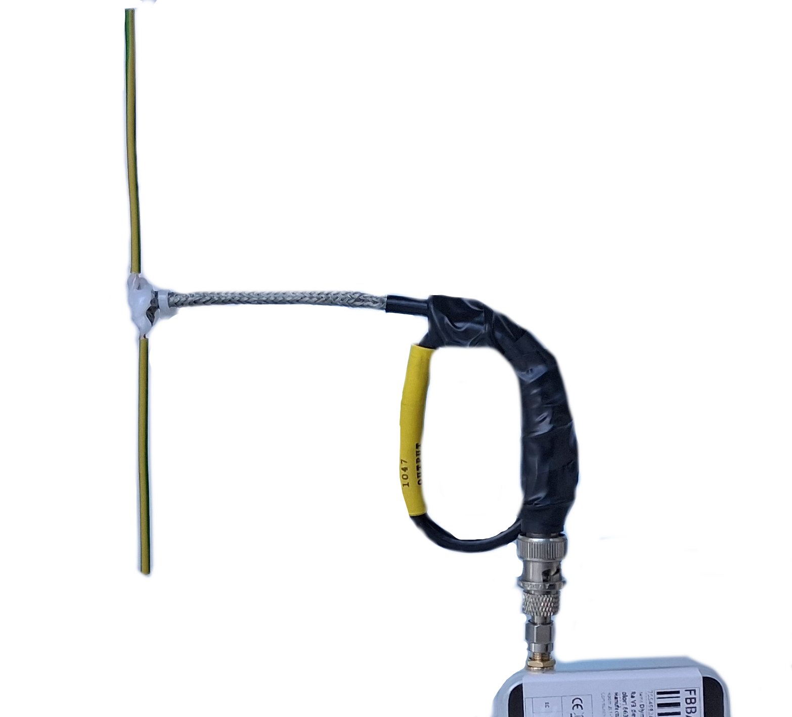
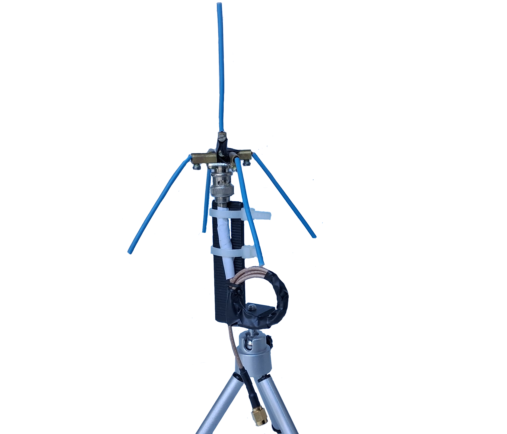
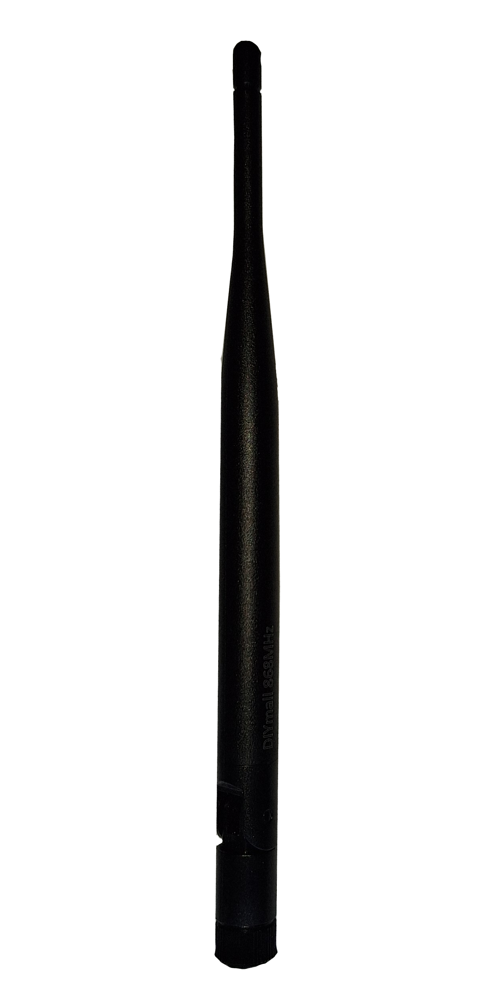
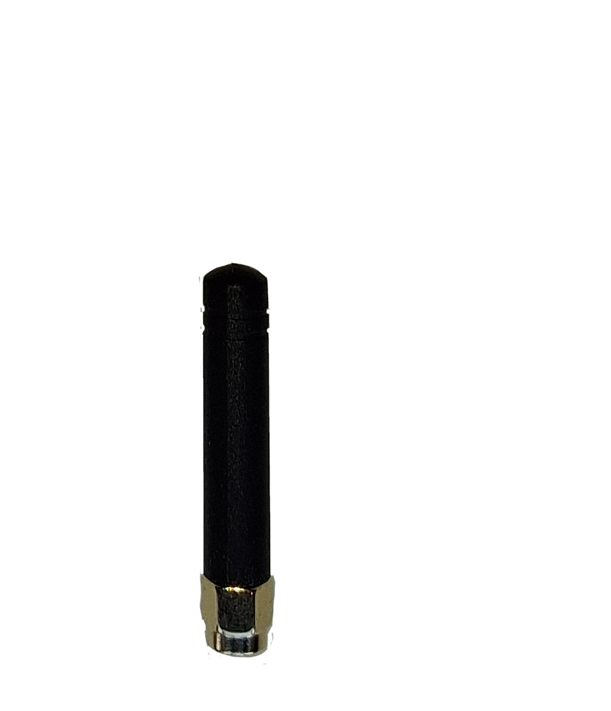

Antennas, SWR, and Impedance
Looking beyond the SWR number
When I first started measuring antennas for Meshtastic, I had a simple belief:
Low SWR = good antenna.
That belief isn’t wrong - but it’s incomplete.
What changed things for me wasn’t reading more theory. It was putting different antennas on a NanoVNA, one after another, and seeing how wildly different they looked behind the SWR number.
Before getting into the measurements, it helps to briefly talk about what the NanoVNA is actually showing - not in a textbook sense, but just enough to make sense of the numbers that follow.
What SWR really tells us
SWR (Standing Wave Ratio) is often treated as the antenna quality number. In reality, it only tells you how much power is reflected back toward the radio, not how well the antenna radiates.
| SWR | Reflected Power | Delivered Power |
|---|---|---|
| 1.0 | 0% | 100% |
| 1.2 | ~1% | ~99% |
| 1.5 | ~4% | ~96% |
| 2.0 | ~11% | ~89% |
| 3.0 | ~25% | ~75% |
Two things stand out immediately:
- Even an SWR of 2:1 still delivers most of the power
- Below about 1.5:1, improvements quickly reach diminishing returns
This explains why Meshtastic nodes keep working even with antennas that aren’t great - LoRa is incredibly forgiving.
What the NanoVNA is actually showing
When we measure an antenna, what we’re really measuring is its impedance, usually written as:
Z = Rs + jXs
It simply means the value is reactive, not resistive.
- Rs is the resistive part
- Xs is the reactive part
Rs - the resistive part
Rs includes both radiation resistance (the good part) and loss resistance (the bad part). The NanoVNA doesn’t separate these - it only shows the total.
Very roughly:
- Values near 50 Ω are easy to work with
- Very low Rs often hints at size compromises or hidden losses
- Higher Rs isn’t automatically bad, but can signal misuse
Xs - the reactive part
Xs tells you whether the antenna is resonant at the measured frequency:
- Xs ≈ 0 → resonant
- Positive Xs → inductive (often electrically long)
- Negative Xs → capacitive (often electrically short)
You can have a decent SWR while Xs is still large - which usually means the antenna is being “helped” into behaving.
Measured antennas
The reference dipole
A full-size dipole cut for 869.5 MHz measured:
|  |  |
|
It’s boring - and that’s a compliment. Resonant by geometry, not by tricks.
¼-wave ground plane
Initial measurement:
|  |  |
|
After drooping the radials:
 |
|
No matching network. No added loss. Just letting the antenna behave naturally.
The stock omni
|  |  |
|
It works, and it’s safe - but clearly compromised for size and convenience.
The antenna that made me stop
|  |
|
Electrically safe, but far from resonant at the intended frequency. A lot of link budget is quietly being lost here.
Why this matters for Meshtastic
Meshtastic doesn’t win by brute force - it wins on link budget. A few dB lost in an antenna can mean fewer hops, weaker links, and a network that only works “most of the time”.
Replacing a compromised antenna with a simple, resonant one is often the single biggest improvement you can make to a node.
Final thoughts
I’m not arguing against stock antennas.
Once you start looking beyond SWR and pay attention to Rs and Xs, the NanoVNA stops being a go/no-go tool and becomes a window into what your antenna is really doing.
And sometimes, the most boring (ugly duckling) antenna on the bench turns out to be the strongest one in the field.
It is possible to experiment with antenna builds on this frequency.
Written by JohanV
2026-02-14